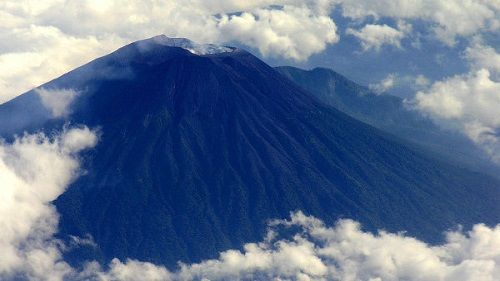

На нашем сайте подобраны наиболее интересные и опасные вулканы со всего мира.
Вулканы разделены по континентам и странам. Подобрать вулкан для рабочего стола можно в разделе
Фотографии. В разделе Новости самые последние
события из мира вулканов.
Малый ледниковый период поздней античности вызван извержением вулканов
Ученый-дендроклиматолог Ульф Бюнтген изучая кольца на древних деревьях, обнаружил следы малого ледникового
периода происшедшего в VI веке, сообщает издание «Научная Россия».
Историкам известно несколько резких перепадов климата. Временем сильнейшего похолодания считался XIV век
(малый ледниковый период). Еще один резкий перепад приходится на начало XVII века.
Но теперь ученым обнаружено, что в мировой истории произошло похолодание, которое было намного сильнее
случившихся в XIV и XVII веках. К тому же оно считается самым сильным за прошедшие 2000 лет.
Ульф Бюнтген совместно со своими коллегами изучил кольца деревьев. Отметим, что размер колец взаимосвязан
с температурой окружающей среды. В 2011 году учеными были исследованы кольца деревьев растущих в Альпах
и деревьев живых и рухнувших в Алтайских горах. Результаты анализа показали подробные данные об изменениях
климата с 359 по 2011 годы. Обнаружено в частности, что самая холодная погода со среднегодовой температурой
11,8 градусов была в VIвеке.
По мнению ученых, это похолодание было вызвано несколькими извержениями вулканов, которые произошли примерно
в 536–547 годах на севере Северного полушария и названо «Малым ледниковым периодом поздней античности».
Мощность извержений была такой силы, что выброшенный пепел на время затмил солнечный свет. В итоге,
произошло резкое похолодание воздуха, увеличение льда на севере, и на нашей планете вообще стало намного
меньше солнечных мест.
Считают, что именно изменение климата повлияло на большие перемены в VIвеке, а может климатическое изменение
только усилило все бурные события этого века. Но Ульф Бюнтген все же считает, что изучение воздействия
древних климатических изменений на мир вполне поможет в выработке правильной стратегии и для сегодняшнего
дня.
Участок Закавказья предохраняют от вулканов остатки древнего океана
На основании построенных новых сейсмических моделей глубинных недр Кавказа, учеными из Института
нефтегазовой геологи и геофизики СО РАН и Новосибирского госуниверситета удалось установить отсутствие
мантийной литосферы на участке между Большим и Малым Кавказом и выявить остаток океанической плиты
предохраняющей область Закавказского межгорного перегиба от подземного перегрева, сообщает издание
«Научная Россия».
Учеными разработаны алгоритмы сейсмической томографии, показывающие полное отсутствие мантийной литосферы
под Кавказом. А литосфере придает прочность именно мантийный слой, без которого кора легко деформируется.
Предположим, убран низлежащий горячий слой, тогда более пластичная астеносфера окажется у подошвы коры
и начнет ее плавить – это приведет к образованию вулканов.
На Кавказе, где плотность вулканов очень большая и происходят такие процессы. Поэтому долгое время было
непонятно для ученых, почему на участке между Большим и Малым Кавказом этих процессов нет. Все дело в
том, что в этом районе было обнаружено прочное вещество, скорее всего остаток древнейшей океанической
плиты, которая пролегла как раз между хребтами Кавказа. Так что, Закавказский межгорный прогиб от
прогрева астеносферой предохраняет именно этот кусок древней литосферы, и как следствие бережет и
от дальнейшего образования вулканических источников.
В субэкваториальном поясе Земли происходит активизация вулканов
Как сообщают Meteovesti.ru, один из таких находится на Суматре – это вулкан Синабунг. Активизировался
вулкан после длительного сна. Еще в конце января вулкан выбрасывал пепел и дым, на вулкане сошел
пирокластический поток. В феврале также отмечены извержения, 2 февраля один за другим произошло
извержение с выбросами пепла и газа на высоту более 1км.
В другом полушарии, практически в одно время активизировался вулкан Санта-Мария в Гватемале. На вулкане
произошла целая серия извержений. Самый сильный выброс пепла достиг высоты в 3 км. Вулкану присвоен
«желтый» код опасности.
В Индонезии произошло извержение вулкана Игон, эвакуированы более тысячи человек

Как сообщают РИА Новости со ссылкой на агентство Франс Пресс, на индонезийском острове Флорес произошло
извержение вулкана Игон.
В связи с этим, местные власти эвакуировали более 1,2 тысяч человек. Это эвакуация тех домом, которые
находятся в радиусе 3 км от вулкана. В случае ухудшения ситуации, власти намерены расширить планы
эвакуации. Сейчас жителям раздали защитные маски из-за выбросов токсичных газов и пепла.
Как известно, Индонезия является частью мощного тектонического разлома «Тихоокеанское огненное кольцо»,
где то и дело происходят сильные подземные толчки и мощные вулканические извержения. Вулкан Игон входит
в число 130 активных вулканов Индонезии, при извержении которых очень часто происходит эвакуация
населения и временно прекращаются воздушные сообщения. Игон – стратовулкан на Малых Зондских островах,
высота его 1703 м.